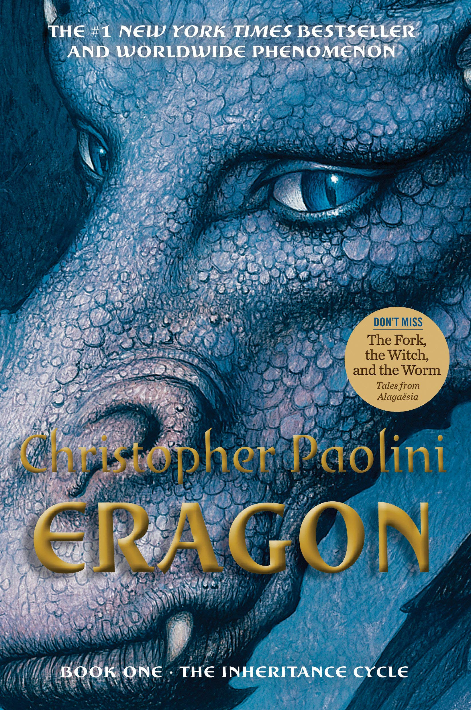

My favorite book is Eragon
I enjoy reading Eragon the most because I enjoy how the setting builds up and the way the story is written. It is probably the book I reread the most.
It comes from the Inheiratance Cycle Series

The genre of this series is fantasy, one of my favorites, and as previously stated it builds up very well, though the ending left a bit to want, which is probably why the author is currently/planning to make a fifth book.
Summary
A summary of the series(taken from the fandom site) is "Eragon, a 15-year-old farm boy, finds a dragon egg while out hunting in the Spine. When the dragon hatches for him, he takes on the responsibilities of the Dragon Riders and sets out on a quest to avenge his uncle's death by killing the Ra'zac and, eventually, to bring defeat to the evil tyrant who rules Alagaësia."
In terms of how memorable each book is to me, it goes in the order
Eragon
Brisingr
Inheritance
Eldest
It goes in this order because as previously stated, Eragon is my favorite, next is Brisingr which I feel helped build the story as it came to a close.
Then comes Inheritance, because while the ending may not have been perfect, I still enjoyed it and it did its job.
Finally comes Eldest, another good book, just, in my opinion, falling behind the other three.
It goes in this order because as previously stated, Eragon is my favorite, next is Brisingr which I feel helped build the story as it came to a close.
Then comes Inheritance, because while the ending may not have been perfect, I still enjoyed it and it did its job.
Finally comes Eldest, another good book, just, in my opinion, falling behind the other three.